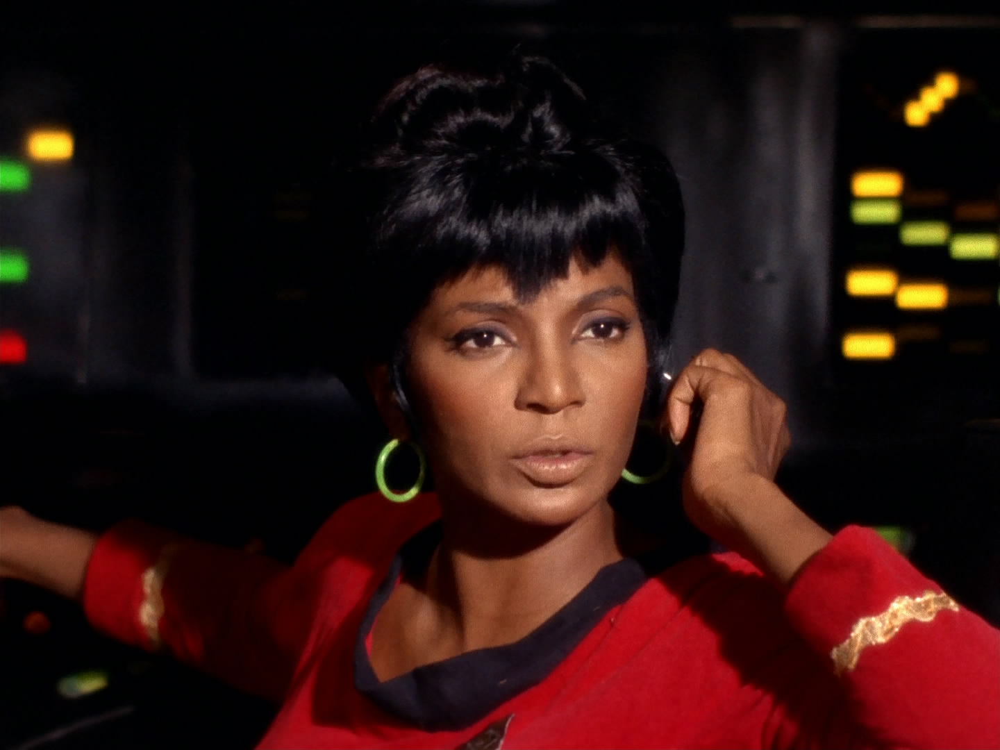

Star Trek's Impact on Culture
Star Trek's contributions to television history include giving women jobs of respect, most notably through the casting of Nichelle Nichols, a black actress, as Uhura, the ship's communications officer. Black actresses at that time on television were almost always cast as servants. In fact, Whoopi Goldberg recalled that the first time she saw Uhura, she excitedly told her mother: "Mama, there's a black woman on television and she ain't no maid!" In an interview, Nichelle Nichols, who played the black female communications officer, said that the day after she told Roddenberry she planned to leave the show, she was at a fund-raiser at the NAACP and was told there was a big fan who wanted to meet her. Nichols said,
"I thought it was a Trekkie, and so I said, 'Sure.' I looked across the room, and there was Dr. Martin Luther King walking towards me with this big grin on his face. He reached out to me and said, 'Yes, Ms. Nichols, I am your greatest fan.' He said that Star Trek was the only show that he, and his wife Coretta, would allow their three little children to stay up and watch. [She told King about her plans to leave the series.] I never got to tell him why, because he said, 'You can't. You're part of history.'"
When she told Roddenberry what King had said, he cried.
Source: wikipedia, The cultural Cultural influence of Star Trek